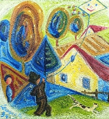

Páteèníci
Èím se vyznaèuje demokracie?
Jakı je tvùj názor na demokracii? Jaké má klady a jaké zápory?
Je u nás demokracie? Proè?
Které státy nejsou demokratické? Jak se to pozná?
Co víš o historii svìtové demokracie?
Panuje demokracie na vaší škole? Jak se to projevuje?
|
PÁTEÈNÍCI
Ve vile bratøí Èapkù na praskıch Vinohradech se od roku 1926 pravidelnì setkávali umìlci, intelektuálové a politici. Protoe to bylo v pátek, vilo se pro nì oznaèení páteèníci. Šlo o spoleènost s velmi rozmanitımi názory. Navštìvoval ji prezident Masaryk, spisovatelé Vanèura, Langer, Kopta, Poláèek a Šrámek, historik Šusta nebo jazykovìdec Mathesius. Páteèníci podporovali demokratickı reim v novì vzniklém Èeskoslovensku a tzv. politiku Hradu. Masaryk i další politikové naopak dopøávali sluchu jejich názorùm a rùznì je podporovali.
Øada spisovatelù pùsobila v Lidovıch novinách. K jejich redaktorùm patøili Èapek, Poláèek, Bass nebo Peroutka. Vìtšinou se vìnovali psaní èlánkù na pomezí literatury jako jsou úvodníky, rozhlásky, sloupky, fejetony nebo soudnièky. Jejich vyznìní bylo èasto humorné, politická témata vyvaovaly èrty ze ivota obyèejnıch lidí. Novináøská tvorba tìchto autorù ovlivnila i jejich tvorbu literární, která oplıvá humorem, zajímavımi støedostavovskımi postavièkami a ocenìním poctivé lidské práce. Tìmto autorùm nebyla cizí ani tematika sportovních utkání, zahradnièení nebo chovu domácích mazlíèkù.
V odborné literatuøe se název pro tuto generaci autorù zatím neustálil. Èasto se o ní mluví jako o generaci pragmatické nebo pøímo èapkovské generaci. Demokratické spisovatele tìce zasáhl Mnichov a následná okupace. Další ranou byl Únor 1948. Peroutka si zachránil ivot emigrací a ve svém úsilí pokraèoval v Rádiu Svobodná Evropa.
|
Lidové noviny
Lidové noviny zaèaly vycházet roku 1893 na Moravì. Jejich vydavatelem byl politik Adolf Stránskı. V dobì meziváleèné byla vìtšina deníkù orgánem nìjaké politické strany. Lidové noviny byly liberálním listem blízkım Hradu. Podporovaly prezidenta Masaryka v jeho snaze budovat demokratické Èeskoslovensko. Lidovımi novinami prošla øada vıznamnıch spisovatelù – bratøi Èapkové, Bass, Poláèek nebo Peroutka. A dále Dyk, Gellner, Mahen, Neumann, Sekora, Tìsnohlídek, Øezáè, Drda nebo Weiner. S pøestávkami vycházejí dodnes, i kdy v rùznıch dobách plnily rùznou úlohu a jejich podoba i zamìøení se promìòovaly. Obzvláštì vıznamné byly samizdatové Lidové noviny (1988-1989).
Co je úvodník, rozhlásek, sloupek, fejeton, polemika, kurzíva, glosa a soudnièka?
Jakı by byl podle tebe osud Karla Èapka po Únoru 1948?
|
Tomáš Garrigue Masaryk
(1850-1937)
Tomáš Masaryk pocházel z Hodonína a zemøel v Lánech. Pùvodnì mìl bıt kováøem, ale dostal se na nìmecké gymnázium v Brnì. Vysokoškolská studia absolvoval ve Vídni, kde také získal doktorát z filozofie. Jeho chotí se stala Amerièanka Charlotte Garrigue. Po zøízení èeské univerzity (1882) byl jmenován jejím mimoøádnım profesorem. Zaloil èasopis Athenaeum, ve kterém inicioval diskuzi o Rukopisech. Bìhem hilsneriády vystupoval proti antisemitismu. Byl poslancem øíšské rady. V prosinci 1914 emigroval a zaèal organizovat zahranièní odboj. Ètyøikrát za sebou byl zvolen prezidentem Èeskoslovenska (1918-1935). Masaryk je autorem odbornıch spisù Sebevrada hromadnım jevem spoleèenskım moderní osvìty, Základové konkrétní logiky, Èeská otázka, Naše nynìjší krize, Palackého idea národa èeského, Ideály humanitní, Otázka sociální, V boji o náboenství, Rusko a Evropa, Svìtová revoluce, Moderní èlovìk a náboenství, Jan Hus, J. A. Komenskı, Karel Havlíèek nebo Studie o Dostojevském.
|
Karel Èapek: Hovory s T. G. Masarykem
Obsáhlı kniní rozhovor Hovory s T. G. Masarykem vznikal postupnì v letech 1928 a 1935. Právo poslední ruky ponechal Karel Èapek Masarykovi, kterı pøipravenı text opakovanì doplòoval a pøepracovával. Prezident v sobì nezapøel univerzitního profesora. Èasto pouívá latinské citáty a sloitá souvìtí. V první èásti Hovorù vypráví Masaryk o svém mládí. Druhá mapuje jeho univerzitní kariéru, exil v dobì 1. svìtové války a zvolení prezidentem. Tøetí èást je vìnována Masarykovım názorùm na filozofii, náboenství nebo politiku. Dílo je plné nadèasovıch myšlenek a nabízí hlubokı vhled do Masarykova zpùsobu uvaování.

Bratøi Èapkové
|

Prezident Masaryk
Charakterizuj Masarykùv styl.
Které Masarykovy myšlenky jsou aktuální i dnes?
Zjisti vıznam slov, kterım nerozumíš.
Jakı je tvùj názor na Masaryka?

Vila bratøí Èapkù na praskıch Vinohradech
Jak se ti líbí obrazy Josefa Èapka?
|
Josef Èapek (1887-1945)
Josef Èapek se narodil v Hronovì a zahynul v koncentraèním táboøe Bergen-Belsen. Byl vıznamnım avantgardním malíøem. S bratrem Karlem napsal povídkové knihy Záøivé hlubiny a jiné prózy a Krakonošova zahrada nebo dramata Ze ivota hmyzu a Adam Stvoøitel. Samostatnì vydal knihy Lelio, Stín kapradiny nebo Kulhavı poutník. Je autorem esejù Nejskromnìjší umìní a Umìní pøírodních národù. Posmrtnì vyšel jeho deníkovı soubor Psáno do mrakù a sbírka Básnì z koncentraèního tábora. Pro dìti napsal Povídání o pejskovi a koèièce, pohádku O tlustém pradìdeèkovi a loupenících a kníku Povídejme si, dìti.

Josef Èapek: Kvìtináøka
|
Josef a Karel Èapkové: Ze ivota hmyzu
Dìj satirické hry Ze ivota hmyzu rámuje postava tuláka, kterı rezignoval na ivot a na svìt. Tulák pozoruje hmyzí hemení. Jednotlivé druhy hmyzu pøitom pøedstavují zkarikované lidské typy. Motılí láska je pøelétavá a jejich vztahy povrchní. Chrobáci se sobecky starají jen o svùj majeteèek – kulièku trusu. Mravenci sice obìtují svùj ivot ve prospìch celku, ale neustále válèí s jinımi druhy mravencù. Právì narozené jepice opìvují vìènost ivota, aby vzápìtí padly mrtvé. Autoøi nabízejí dva rùzné konce inscenace. V jednom tulák umírá, ve druhém se rozhodne pro ivot a odchází pracovat s døevorubci.
Josef Èapek: Psáno do mrakù
Kniha Psáno do mrakù obsahuje krátká zamyšlení, aforismy a glosy Josefa Èapka. Autor se v nich vyjadøuje k problematice tvorby, umìní, kultury, spoleènosti nebo smyslu ivota. Èastokrát jde o velmi intimní zápisky, které mají charakter deníkovıch záznamù.
|

Kniní obálka od Josefa Èapka
Jak nazıvají chrobáci kulièku trusu?
Jak se oslovují postavy mezi sebou?
Co chtìli autoøi v této scénì vyjádøit?
Josef Èapek: Harmonikáø
Vyuij jednu z Èapkovıch myšlenek jako motto pro vlastní slohovou práci.
|
Karel Poláèek (1892-1945)
Poláèek se narodil v Rychnovì nad Knìnou a zemøel v koncentraèním táboøe Dora u Buchenwaldu. Pracoval jako redaktor Lidovıch novin, kam psal soudnièky. Jeliko pocházel z idovské rodiny, nemohl v dobì protektorátu publikovat. Román Hostinec U kamenného stolu proto vyšel pod jménem malíøe Rady. Poláèek se dobrovolnì pøihlásil do transportu do Terezína, aby mohl následovat svou lásku. Psal knihy humoristické – Mui v offsidu, Hráèi, Lehká dívka a reportér, Edudant a Francimor, Bylo nás pìt, satirické – Michelup a motocykl, Dùm na pøedmìstí i realistické – tetralogie Okresní mìsto, Hrdinové táhnou do boje, Podzemní mìsto, Vyprodáno. Vydal také idovské anekdoty nebo urnalistickı slovník.
|
Karel Poláèek: Bylo nás pìt
Humoristická próza Bylo nás pìt líèí rùzná dobrodruství party klukù na malém mìstì. Vypravìèem je školák Petr Bajza, jeho vyjadøování je hlavním zdrojem humorného vyznìní knihy. Petr spojuje pøehnanì kniní vırazy a tvary slov s nespisovnımi a jeho sloh je znaènì neobratnı. Kromì Petrovıch kamarádù Antonína Bejvala, Pepka Zilvara, Édy Kemlinka, Èenka Jirsáka, dalších dìtí a psa v knize vystupují zkarikované postavy dospìlıch obyvatel mìsteèka. Závìr knihy tvoøí Petrùv horeènatı sen o putování do Indie. Kniha vyšla a po autorovì smrti.
Šnorer Lebertran byl velmi zbonı. A tak, kdy se jednou vroucnì modlil, zjevil se mu archandìl Gabriel. „Milı Gabrieli," povídal Lebertran, „co je Bohu sto tisíc let?" „Sto tisíc let je Bohu jedna minuta." „A co je Bohu sto tisíc korun?" „Sto tisíc korun je Bohu jeden haléø." „Ctìnı pane archandìli, pøimluv se u Boha, a mi daruje jeden haléø." „Poèkej minutu…" (idovská anekdota)
|

Vyber si jeden odstavec a najdi v nìm nespisovná slova.
Vypiš z textu kniní vırazy.
Co je ofsajd?

Josef Èapek Pouštìní draka
|
Eduard Bass (1888-1946)
Eduard Schmidt se narodil v Praze, kde také zemøel. Otec vlastnil kartáènickou firmu, kterou syn zprvu obchodnì zastupoval, ale pozdìji zaèal vystupovat pod pseudonymem Bass v kabaretu Èervená sedma. Stal se šéfredaktorem Lidovıch novin, kam psal rozhlásky. Je autorem humoristické prózy Klapzubova jedenáctka, románu Cirkus Humberto a povídek Lidé z maringotek. Vydal té knihy Jak se dìlá kabaret?, To Arbes nenapsal, Vrchlickı nezbásnil nebo Umìlci, mecenáši a jiná èeládka.
|
Eduard Bass: Cirkus Humberto
Bassùv román Cirkus Humberto vypráví o osudech nìkolika generací slavného cirkusového rodu. Èech Antonín Karas, pùvodním povoláním zedník, odchází po smrti manelky do Hamburku, kde zaène pracovat pro cirkus Humberto jako trumpetista. Jeho syn Vašek si prostøedí manée zamiluje a postupnì se stane krasojezdcem, artistou i krotitelem šelem. Po svatbì z rozumu s dcerou øeditele Helenou Berwitzovou pøebírá celı cirkus. V dobì hospodáøské krize musejí cirkus prodat, ale zaøídí si v Praze úspìšné varieté. Jejich syn Petr se o povolání rodièù nezajímá a více ho láká studium. V rodinné tradici naštìstí pokraèuje vnuèka Lidka, která se stala taneènicí. Díky ní jméno Humberto ije dál v umìleckém svìtì. Kniha je zabydlena zajímavımi postavièkami z rùznıch koutù svìta, které spojila láska k cirkusu.
Román Cirkus Humberto vyšel v dobì protektorátu, kdy byla ohroena samotná existence èeského národa. Ukazuje vlastenectví Èechù i jejich schopnosti, díky nim se dokázali prosadit mimo svou zemi.
|
František Tichı: Hlava klauna, Fratellini
Chtìl/a bys pracovat v cirkusu? Proè?
Které kletby znáš?
Kteøí Èeši se proslavili v zahranièí? Èím?
V èem vynikáš ty?
|
Ferdinand Peroutka
(1895-1978)
Peroutka se narodil v Praze a zemøel v New Yorku. Patøí k nejvıznamnìjším èeskım novináøùm a obhájcùm demokracie. Byl šéfredaktorem tıdenníku Pøítomnost (1924-1939), kterou finanènì podporoval prezident Masaryk, a politickım komentátorem Lidovıch novin. Napsal knihy Jací jsme nebo Budování státu (nedokonèeno). Za války byl vìznìn v koncentraèních táborech Dachau a Buchenwald. Po osvobození redigoval Svobodné noviny (1945-48) a Dnešek (1946-48). V roce 1948 uprchl do exilu. Z USA øídil èeskoslovenskou sekci Rádia Svobodná Evropa. Napsal Demokratickı manifest. Je rovnì autorem próz Pozdìjší ivot Panny a Oblak a valèík (té drama) nebo tragédie Šastlivec Sulla.

František Langer
|
Ferdinand Peroutka – novináø
Peroutka hájil ve svıch èláncích a polemikách ideály demokracie. Velmi brzy si všiml nebezpeèí, která v sobì skrıvala komunistická ideologie. Na pøelomu let 1924 a 1925 zveøejnil v Pøítomnosti rozsáhlou anketu Proè nejsem komunistou?, do které se zapojila øada osobností, napøíklad bratøi Èapkové. Varoval pøed fašismem i nacismem a upozoròoval na jejich nebezpeènou podobnost s komunistickım reimem v Sovìtském svazu.
Další autoøi a jejich díla
František Langer: Velbloud uchem jehly, Periferie

Adolf Hoffmeister: Páteèníci
|

Jaké odlišnosti Peroutka vidí v nacistickém a stalinském reimu?
V èem se podle Peroutky navzájem podobají?
Souhlasíš s autorovımi názory? Proè?

Josef Èapek: Námoøník (Afrika)
|
Internetové stránky
Èapek, Karel: Hovory s T.G.Masarykem
Èapkové: Krakonošova zahrada, Záøivé hlubiny a jiné prózy, Juvenilie
Èapek, Karel: Proè nejsem komunistou
Èapek, Josef: Povídání o pejskovi a koèièce
Èapek, Josef: Proè nejsem komunistou
Poláèek: Bylo nás pìt, Mui v offsidu
Bass: Klapzubova jedenáctka
Bass: Cirkus Humberto
Bassovy sloupky
Masaryk, rozcestník
Masaryk: Jak pracovat
Polák: Struènı ivotopis T.G. Masaryka, Masarykovo náboenství
Masaryk
Masaryk, prezident
Masaryk
Masaryk, ivotopis
Herben: T.G.Masaryk ivot a dílo presidenta osvoboditele
Kuèera: Masaryk kontra Pekaø, èlánek
Tipy
Lidové noviny
Pøítomnost
Nadace Ferdinanda Peroutky
Masarykova spoleènost
Masarykùv ústav AV ÈR
Cirkus Humberto
PEN klub
Exkurze
Lány
Muzeum T.G.Masaryka, Lány
Masarykovo muzeum, Hodonín
|
Doporuèená èetba
Bass, Eduard: Kázáníèka, Kentaur, Praha 1993
Bass, E.: Klapzubova jedenáctka, BB art, Praha 2000
Bass, E.: Moje kronika, ÈSS, Praha 1985
Bass, E.: Rozhlásky, ÈSS, Praha 1957
Buriánek, František: Karel Èapek, ÈSS, Praha 1988
Èapek, Josef: Kulhavı poutník, Odeon, Praha 1976
Èapek, J.: Nejskromnìjší umìní (katalog k vıstavì)
Èapek, K.: O demokracii, novinách a èeskıch pomìrech, Academia, Praha 2003
František Tichı, Gallery, Praha 2002 (katalog k vıstavì)
Guth-Jarkovskı, Jiøí: Spoleèenskı katechismus, Levné knihy KMa, Praha 2000
Hájková, Alena: Kníka o Karlu Poláèkovi, Academia, Praha 1999
Josef Èapek a kniha, Praha 1958
Karel Poláèek a podoby humoru v èeské literatuøe 19. a 20. století, Rychnov nad Knìnou 2004
Kosatík, Pavel: Ferdinand Peroutka (1895-1938), Paseka, Praha 2003
Kosatík, P.: Ferdinand Peroutka pozdìjší ivot (1938-1978), Paseka, Praha 2000
Masaryk, T.G.: Ideály humanitní, Melantrich, Praha 1990
Masaryk, T.G.: O demokracii, Melantrich, Praha 1991
Masarykova slova, Daniel, Praha 1990
Mluví k vám Ferdinand Peroutka (2 svazky), Argo
Mráz, Bohumír: Josef Èapek, Horizont, Praha 1987
Opelík, J., Slavík, J.: Josef Èapek, Praha 1996
Otáhal, Milan: Ferdinand Peroutka – mu pøítomnosti, Melantrich, Praha 1992
Pernes, Jiøí: Svìt Lidovıch novin 1893-1993, Lidové noviny Praha 1993
Peroutka, Ferdinand: Jací jsme, Demokratickı manifest, Praha 1991
Peroutka, F.: O vìcech obecnıch (2 svazky)
Peroutka, F.: Údìl svobody, Vıbor z rozhlasovıch projevù 1951-1977, Academia, Praha 1995
Poláèek, Karel: Se lutou hvìzdou, Praha 1961
Poláèek, K.: idovské anekdoty, ÈSS, Praha 1991
Soubigou, Alain: Tomáš Garrigue Masaryk, pøel. H.Beguivinová, Paseka Praha 2004
Spisy Františka Langera (15 svazkù)
Spisy Karla Poláèka (20 svazkù)
Spisy TGM (36 svazkù)
TGM ve fotografii, Novináø, Praha 1990
|
Vypracuj písemnı referát o nìkteré z uvedenıch knih.

Otakar Švec: Motocyklista

Prezident Masaryk s Karlem Èapkem
PEN klub
Mezinárodní sdruení spisovatelù PEN klub bylo zaloeno roku 1921 v Londınì. Jeho èeská odno vznikla roku 1925 díky úsilí Karla Èapka. PEN klub dbá na to, aby nikde na svìtì nebyla porušována svoboda projevu a literární tvorby a lidé pera nebyli pronásledováni za vyjádøené názory nebo publikovaná díla.
Co dalšího víš o organizaci PEN klub?
|
|